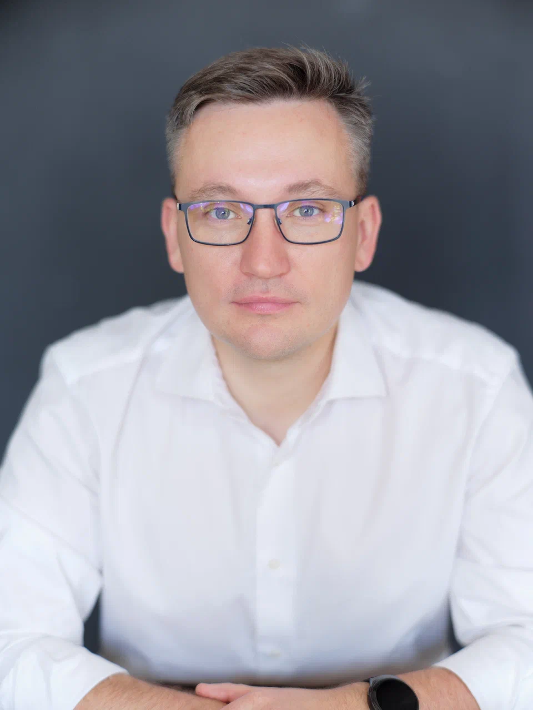

Внедряем ИИ в ваши процессы так, что рутину берут агенты, а решения остаются за людьми.
Команда тонет в повторяющихся задачах, масштабирование требует нового найма, а экспертиза уходит вместе с сотрудниками.
Обработка писем, документов, заявок и отчётов отнимает часы у людей, которые могли бы решать, а не перекладывать.
Каждый рост объёма — это новые ставки, обучение и риски. Мощность компании упирается в скорость найма.
Знания и наработки живут в головах. Уходит человек — и процесс приходится собирать заново.
Мы строим не «болталку», а инженерный конвейер: агенты быстро делают черновую работу, а на ключевых точках решение подтверждает человек. Каждое действие агента фиксируется, и агент не может утвердить сам себя.
Забирает входящее, распознаёт, классифицирует.
Собирает данные, готовит черновик и расчёт.
Проверяет и утверждает.
Формирует документ, вносит в систему.
Отправка / подпись.
Градуированная автономия: простое — автоматически, важное — после подтверждения, критичное (деньги, договоры, первый контакт) — всегда через человека. Плюс kill switch в любой момент.
Каждый сценарий — конкретная рутина, которую забирает агент. Решение на ключевых точках остаётся за человеком.
Агент разбирает входящую почту, выделяет главное и сроки, приоритизирует и готовит черновики ответов и задачи.
Агент собирает обращения из всех каналов, отвечает первой линией 24/7, квалифицирует, заводит в CRM и готовит черновик КП.
Агент мониторит площадки, находит новые отзывы и упоминания, оценивает тональность и готовит черновики ответов.
Агент регистрирует и маршрутизирует входящее, ведёт номенклатуру и готовит черновики договоров и писем из ваших шаблонов и данных.
Агент забирает счета из почты, распознаёт реквизиты и суммы и создаёт черновики документов прямо в 1С.
Агент готовит черновики документации по вашим шаблонам и нормативам — от базового проекта (БП) до стадий П, Р, РД — и следит за комплектностью разделов.
Своя база знаний плюс локальный ИИ, который отвечает по вашим документам, регламентам и накопленному опыту. Данные не покидают ваш контур.
Агент держит весь контекст проекта — письма, документы, договорённости — отвечает по нему и готовит сводку статуса и следующие шаги.
Агент расшифровывает встречу (можно локально), готовит черновик протокола и выносит поручения в канбан. Перед следующей встречей — сводка «что поручали и что сделано».
Агент собирает данные из систем, обновляет дашборды и готовит черновик отчёта с выводами.
Соберите цифрового сотрудника под роль: он берёт на себя рутинную часть работы 24/7 и разгружает команду, а решения и ответственность остаются за людьми. По сути — сценарии выше, собранные в готовую роль.
Как это работает: цифровой сотрудник живёт в ваших системах, действует через те же гейты и в любой момент останавливается kill switch'ем — вы всегда видите, что он сделал.
Мы не заменяем людей — мы меняем то, чем они заняты.
Видно, где и как применяется ИИ, что он сделал и на каких данных.
Значимые решения — деньги, договоры, отправка — утверждает человек.
Любой процесс можно остановить и вернуть под ручное управление в один клик.
Там, где данные чувствительны, мы разворачиваем модели локально — в вашей инфраструктуре. Особенно важно для промышленности, госсектора и объектов с требованиями к защите данных.
Развёртывание LLM on-prem — данные остаются внутри периметра.
Каждое действие агента фиксируется; кто, что и когда — прозрачно.
Где можно — облако для качества; где чувствительно — только локально.
На каждом шаге — конкретный результат, который остаётся у вас: карта, отчёт, работающий контур. Запускаем ИИ рядом с людьми, замеряем 1–2 месяца — и только потом масштабируем.
Смотрим ваши процессы и находим, где ИИ даст эффект быстрее всего.
Один процесс, измеримый результат — запускаем ИИ рядом с людьми и замеряем.
Встраиваем агента в процесс — с человеческими гейтами и аудитом действий.
Вы владеете работающим активом, мы поддерживаем и расширяем на другие процессы.
Входящие и заявки не ждут утра и рабочего дня.
Ожидаемая разгрузка команды от повторяющихся операций.
Растёт объём работы без пропорционального роста штата.
// цифры — ориентир ожидаемого эффекта, зависят от процесса; уточняются на AI-аудите и пилоте.

«Двадцать лет я строю бизнесы и сложную технику руками — путь от строительной компании до разработки собственной промышленной микроэлектроники и систем диагностики оборудования на сотнях каналов в крупной промышленности. Я знаю, чего стоит довести инженерный продукт до эксплуатации и вести живые команды. Поэтому к ИИ отношусь без иллюзий: он даёт скорость, но ответственность и решения остаются за людьми.»
Посмотрим ваши процессы и покажем, где ИИ даст эффект быстрее всего — с сохранением контроля за людьми. Без обязательств.